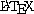

插图
11.1 插入图片
插入图片很简单，你可以是用 的
\includegraphics{eps-file}
也可以是用 plain TEX的
\epsfbox{eps-file}
11.2 图片缩放
使用
\imgpreamble
\let\LaTeXdocument\document
\def\document{\LaTeXdocument\Large}
\endimgpreamble
可以把数学公式转化而来的图片放大一些。
11.3 直接在 HTML 里插入图片
\rawhtml ... \endrawhtml
可以输入一段原封不动的 HTML，所以你可以使用
\rawhtml <img src="andyair.jpg"> \endrawhtml
来插入任何 HTML 可以支持的图片。比如我的偶像的照片是 jpg 的：
其实你可以定义一个 TEX命令一下子就可以插入任何图形到 HTML 里：
\def\htmlpic#1{\htmlonly\rawhtml<img src="#1">\endrawhtml\endhtmlonly}
以后用
\htmlpic{andyair.jpg}
就能插入除 eps 之外格式的图片了。eps 图片还是需要 \includegraphics.
11.4 插入 TEX 图片
你可以让 TEX把某些东西排版后作为一个图片插入 HTML:
\begin{figure}
\begin{center}
\makehtmlimage{
\newdimen\unit
\def\point#1 #2 {\rlap{\kern#1\unit
\raise#2\unit\hbox{$
\scriptstyle\bullet\;(#1,#2)$}}}
\unit=\baselineskip
\centerline{\vtop{\hrule
\hbox{\vrule height10\unit depth9.4\unit \kern2\unit
\hbox{%
\point 0 0 % Alioth (Epsilon Ursae Majoris), mag 1.79
\point 0 8 % Dubhe (Alpha Ursae Majoris), mag 1.81
\point 0 -8 % Alkaid (Eta Ursae Majoris), mag 1.87
\point -1 -2.5 % Mizar (Zeta Ursae Majoris), mag 2.26
\point 4 7 % Merak (Beta Ursae Majoris), mag 2.37
\point 4 2 % Phekda (Gamma Ursae Majoris), mag 2.44
\point 1 1.5 % Megrez (Delta Ursae Majoris), mag 3.30
}% Src: Atlas of the Universe; Astronomy Data Book
\kern7\unit \vrule}\hrule}}
}
\caption{把 \TeX 排版的输出作为图片}
\end{center}
\end{figure}
结果是：
|
11.5 图片复用
如果你使用数学公式，最好把复杂的，需要多次使用的数学符号用
\imgdef 定义为一个可以复用的图片，这样 tex2page 可以重复利用
这个图片，而不用生成重复的图片了。比如：
\imgdef\ohm{$\Omega$}
The circuit uses two 10-\ohm\ resistors, three 50-\ohm\
resistors and one 1-k\ohm\ resistor.
结果是：
The circuit uses two 10- resistors, three 50- resistors and one 1-k resistor.
11.6 小心过期图片！
tex2page 缺省会尽量复用已经生成的图片。如果你生成了图片后， 又把原来位置的图片换成了另外一个，或者删掉了前面插入的一些图 片。有时 tex2page 就会把图片顺序搞乱。
这个时候，你需要把目录下的 jobname-Z-G-*.png 文件删 掉，让 tex2page 重新生成图片。